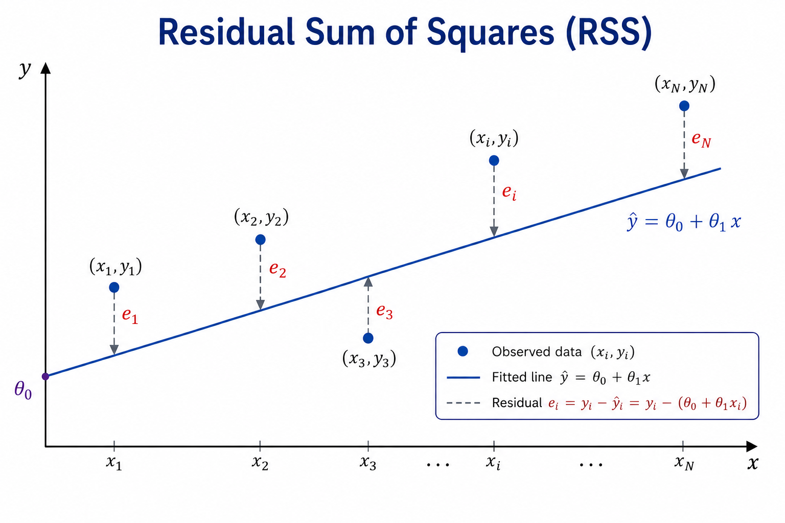

# Linear regression parameters
def min_sq(x,y):
"""
Short Description
Inputs:
-------
x, y
Outputs:
--------
theta_1, theta_0
Author:
-------
Rodrigo Kang
"""
x_bar, y_bar = np.mean(x), np.mean(y)
theta_1 = np.dot(x - x_bar, y - y_bar) / np.linalg.norm(x - x_bar)**2
theta_0 = y_bar - theta_1 * x_bar
return [theta_1, theta_0]Linear Regression
Technical Notes
Linear regression is a statistical method used to model the relationship between a response variable and one or more predictors, or covariates. When there is a single predictor, the model is called Simple Linear Regression; when there are two or more predictors, it is called Multiple Linear Regression.
Linear regression is a fundamental statistical model and is also widely used as a supervised machine learning method for regression problems. It provides a natural starting point for studying regression, introducing many of the concepts that also appear in more sophisticated models.
1 Simple Linear Regression
Suppose we have a training dataset
\[ \mathcal{D} = \{(x_i,y_i)\}_{i=1}^{N}, \tag{1}\]
where \(x_i\) is the predictor and \(y_i\) is the corresponding response for observation \(i\). In tabular form,
| \(y\) | \(x\) |
|---|---|
| \(y_1\) | \(x_1\) |
| \(y_2\) | \(x_2\) |
| \(\vdots\) | \(\vdots\) |
| \(y_i\) | \(x_i\) |
| \(\vdots\) | \(\vdots\) |
| \(y_n\) | \(x_N\) |
Suppose that the conditional mean of the response can reasonably be modeled as a linear function of the predictor. The simple linear regression model is
\[ y_i = \theta_0 + \theta_1 x_i + \varepsilon_i, \tag{2}\]
where \(\theta_0\) is the intercept, \(\theta_1\) is the slope, and \(\varepsilon_i\) is an error term representing the part of \(y_i\) that is not explained by the linear relationship.
The systematic component of the model is therefore
\[ \mathbb{E}[Y \mid X=x] = \theta_0 + \theta_1 x. \tag{3}\]
The goal is to estimate the unknown parameters \(\theta_0\) and \(\theta_1\) from the observed data. Once estimates \(\hat{\theta}_0\) and \(\hat{\theta}_1\) have been obtained, the fitted regression line is
\[ \hat{y}_i = \hat{\theta}_0 + \hat{\theta}_1 x_i. \tag{4}\]
For each observation, the difference between the observed response and its fitted value is called the residual:
\[ e_i = y_i - \hat{y}_i. \tag{5}\]
The question is then how to choose \(\hat{\theta}_0\) and \(\hat{\theta}_1\) so that the fitted line represents the observed data as well as possible. The standard approach is Ordinary Least Squares.
1.1 Ordinary Least Squares
